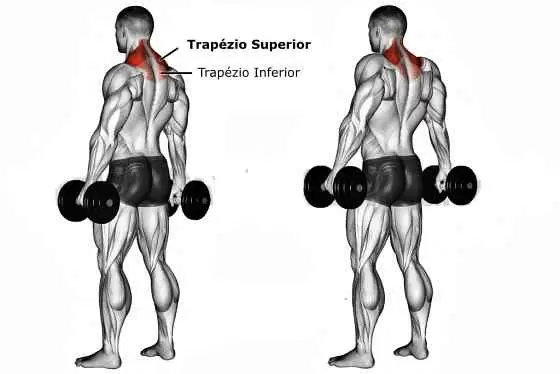

Exercícios para trapézio:
Encolhimento com halter
Posicione os pés à largura dos ombros e segure um halter em cada mão. Eleve os ombros, como quem os encolhe, contraindo os trapézios. Baixa lentamente a carga, de um modo controlado.
Encolhimento com barra atrás

Apoie a barra em um suporte e fique à frente dela. Segure a barra com as palmas das mãos viradas para trás. Suspenda a barra de uma forma que mantenha os cotovelos estendidos. Suba os ombros sem mexer os cotovelos. Faça lentamente e mantenha a contração por uns segundos em cada repetição.